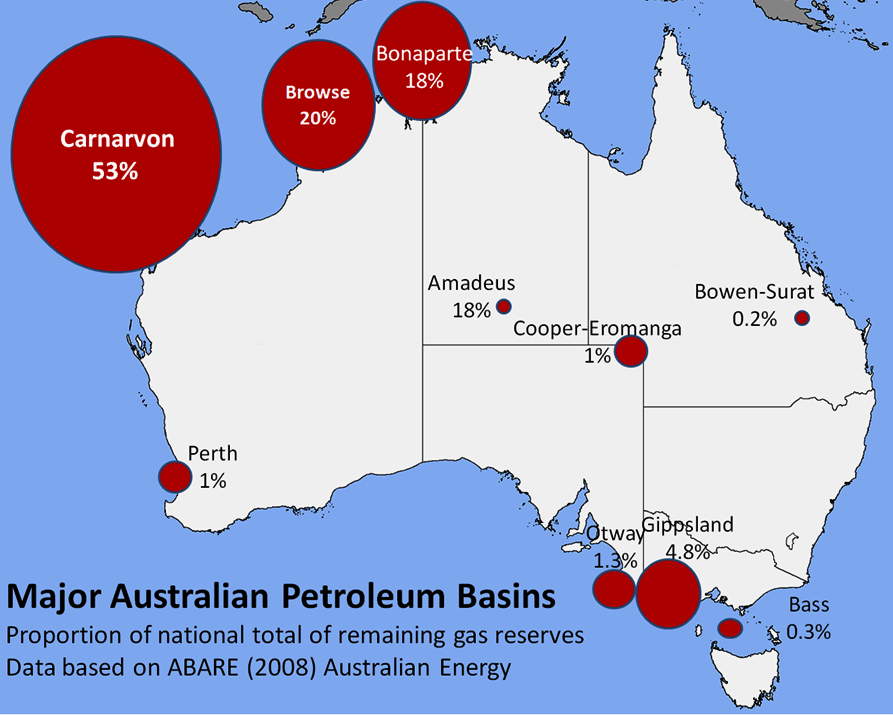

Australia
Australia is a net energy exporter, and was the fourth-highest coal producer in the world in 2009. Historically–and until recent times–energy in Australia was sourced largely from coal and natural gas, however due to the increasing effects of global warming and human-induced climate change on the global environment, there has been a greater shift towards renewable energy such as solar power and wind power both in Australia and abroad. This in turn has led to a decrease in the demand of coal worldwide.
Emission Overview
In 2009, Australia had the highest per capita CO2 emissions in the world. At that time, Maplecroft's CO2 Energy Emissions Index (CEEI) showed that Australia releases 20.58 tons of CO2 per person per year, more than any other country. Since that time, however, emissions have been reduced. From 1990 to 2017, emissions per capita fell by one-third, with most of that drop occurring in the more recent years. Additionally, the emissions intensity of the economy fell by 58.4 percent during the same time period. These are the lowest values in 27 years.
The energy sector in Australia increased its carbon dioxide emissions by 8.2% from 2004 to 2010 on average.
Oil
Australia's oil production peaked in 2000, after gradually increasing since 1980. Net oil imports rose from 7% of total consumption in 2000 to 39% in 2006. Decreasing domestic oil production is the result of the decline of oil-producing basins and few new fields going online.
Coal
According to the International Energy Agency (IEA), global coal production increased 23% from 2005 to 2010 and 4.7% from 2009 to 2010. In Australia, coal production increased 12.9% between 2005 and 2010 and 5.3% between 2009 and 2010.
In 2009, Australia was the fourth-highest coal producer in the world, producing 335 megatonnes (Mt) of anthracite (black coal) and 64 Mt of lignite (brown coal).[8] Australia was the biggest anthracite exporter, with 31% of global exports (262 Mt out of 836 Mt total). Lignite is not exported. 78% of its 2009 anthracite production was exported (262 Mt out of 335 Mt total). In this respect, Australia is an exception to most anthracite exporters. Australia's global anthracite export share was 14% of all production (836 Mt out of 5,990 Mt total).
In 2015, Australia was the biggest net exporter of coal, with 33% of global exports (392 Mt out of 1,193 Mt total). It was still the fourth-highest anthracite producer with 6.6% of global production (509 Mt out of 7,709 Mt total). 77% of production was exported (392 Mt out of 509 Mt total).
Newcastle, New South Wales, is the world’s largest coal-export port. The Hunter Valley region in New South Wales is the chief coal region. Most coal mining in Australia is open cut.

Climate change
Australian total emissions in 2007 were 396 million tonnes of CO2. That year, the country was among the top polluter nations of the world per capita. Australian per-capita emissions of carbon dioxide in 2007 were 18.8 tons of CO2, compared to the EU average of 7.9 tons. The change in emissions from 1990 to 2007 was +52.5 percent, compared to the EU's -3.3 percent. The per-capita carbon footprint in Australia was rated 12th in the world by PNAS in 2011.
Due to climate change, Australia is expected to experience harsher extreme weather events, mainly bush-fires and floods during summer. Rising sea levels are of particular concern for Australia, because most of the population lives in the coast (around 85%).